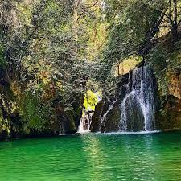
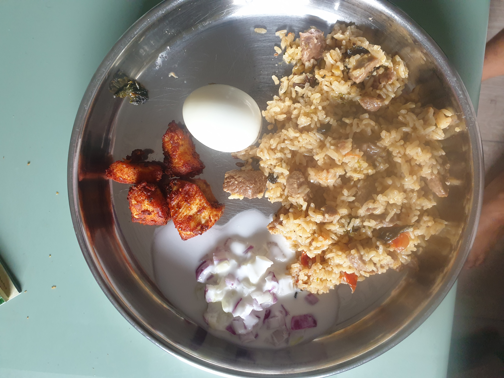
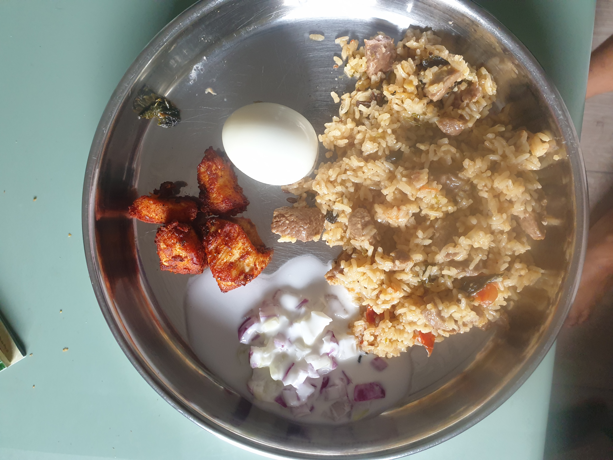

Hi! I have different faces 😉.I'm a frequent traveler, nature lover, a cook, but not in the spontaneous sort of way.
I love to plan my trips and go out on mini-adventures once I feel comfortable there. You can say I'm an organized free spirit. I love to try out new food, immerse myself in the beautiful culture of other places, and meet locals.

Still the place i didn't visit is Santorini, Greece. I would love to visit in near future. It's a long time pending in my life.
Nothing in the nature lives for itself Rivers don't drink their own water Trees don't eat their own fruit Sun doesn't give heat for itself Moon doesn't ever go on honeymoon Flowers don't spread fragrance for themselves Moral: Living for Others is the Rule of Nature. I would love to watch the silence of water and Nature's beauty for hours.
I love to cook Food, especially South Indian. My Family & friends are addicted to my style of cooking. Whenever they find time they will Telephone me,pass by and make delicious food for them. It is great pleasure for me to invite others and cook for them


 

Mostly I visit news websites and amazon shopping.
Thanks for reading about me. I hope it was intresting to you too😇
Go to top